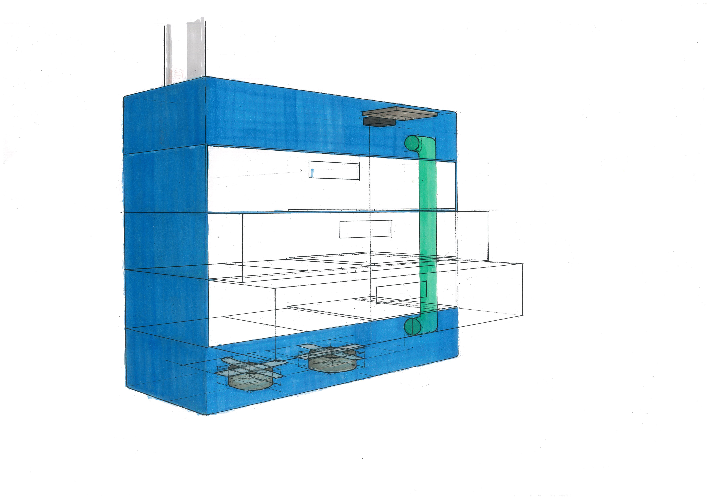

Automated Exhaust Filter (Automaxil)
Project Background
This project was a collaboration with Pertamina (Indonesia biggest oil company) as a CSR project to help automotive reparation workshop to have better health benifit by giving better air quality inside their workshop. Automotive gas carbon output has bad health benifit for workers who directly inhale it especially for long term. Automaxil was held 3 month with 3 other members, come from different background with different jobdesk.
Problem
The inital product was initiated from engineer students, with working prototype without further design development. Not included user usage and experience of the product, optimazition design function, developed design sistemic and aesthetic, and material impelementation are main concern in this project.
Solution
Automaxil are an automated exhaust filter system intended to be implement in every automotive workshop in Indonesia to filtering automotive carbon gas output from combustion process. Me and other team member formed, intended to develop more further design from the original design. In this team consist with mutidiciplinary member, and I'm contributed as Product Designer. My main goal to design Automaxil in user centric ways. Come up with several alternative design. Initial 2D design idea is the scope of work of this project within 3 months, because of all the member have their own activity outside of the project. I manage to develop further alternative design with 3D render, model, and prototype.
Glimpse of this project
Click image to see full screen
Alt Design 1
Alt Design 2

Alt Design 3